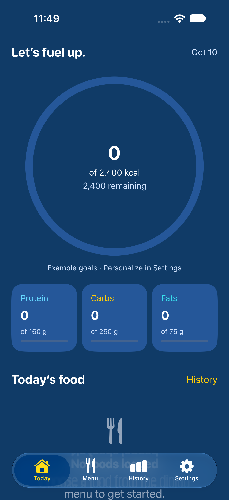

The menu you actually eat from.
Choose your dining hall and meal. Browse by station or search for the dish on your plate, using menus from Anteater API with UCI Dining supplements.
From the Anteatery to Brandywine. Find what’s on the menu, log your plate, and keep track of your day.
Made for UCI students. No account needed.

iPhone development preview · example goals
Your menu and your food diary,
together in one place.
Choose your dining hall and meal. Browse by station or search for the dish on your plate, using menus from Anteater API with UCI Dining supplements.
Adjust the serving quantity before adding a food. Reported nutrition scales with your portion, and each saved entry keeps its original nutrition.
See your calories and macros, revisit previous days, and set your own goals. Your diary stays on your device and remains available offline.
An unknown value isn’t a zero.
Some dining-hall dishes don’t come with nutrition information. You can still log them. ZotMacros clearly marks missing nutrition and flags incomplete daily totals.
Anteater API is the primary nutrition source. Supplemental menu entries help you find foods the API misses.
Data from Anteater APIStart with the Android preview.
The native iPhone app is in development.